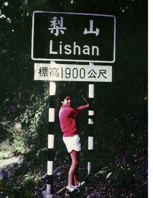
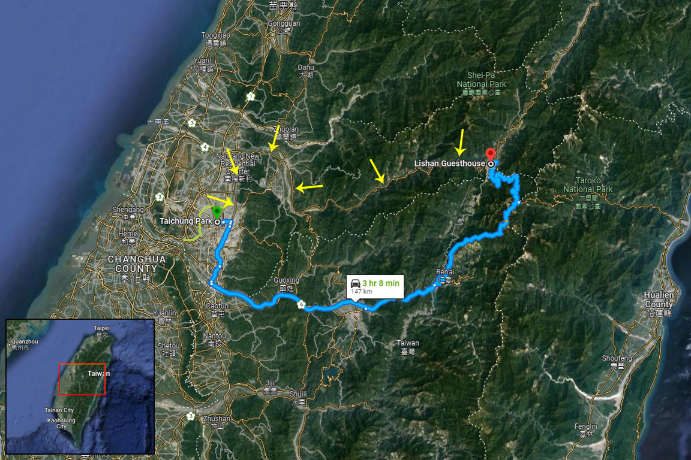

|
 While visiting Taiwan in July of 1984, one day I decided to take Chris on a motorcycle ride up to the Fengyuan Golf Course which was up in the mountains about 10 miles or so northeast of Taichung where we were staying with Mei-O's family. When I was in the Air Force stationed in Taiwan, I often drove up there on my Honda 125 where the view was just spectacular. Standing at the edge of the golf course's parking lot looking west, a vast, rocky dried-up river bed flowed as far as the eye could see to the ocean. A patchwork quilt of farms and rice paddies filled the space south of the river bed towards Taichung. And headed east from the golf course, a dead end road led to a vantage point overlooking a deep valley between this mountain range and the next, where I often sat quietly listening to the dogs and chickens and people sounds seeping up from the small unseen village in the valley way down below me. So with about five dollars in my pocket, Chris and I headed off on my brother-in-law's motorcycle for the short ride towards Fengyuan. I don't even remember if we got to the golf course or not, but I do remember passing the northern end of this first mountain range just east of Taichung, traveling through the foothills below the golf course eastbound towards the interior of Taiwan. (Taichung is slightly inland from the west coast of the island.) Before I knew it, I was on the main cross-island highway which I had traveled many times in the past. The highway was rough and narrow, oft times cut right into the sheer rock of the steep mountain cliffs, with many tunnels cut right through the mountains. The trip began to turn into an adventure, and would soon leave us full of memories not easily forgotten. I don't know what kept me going on, but it was a nice day, the sun was shining and we had all the time in the world, so we continued on eastbound towards the center of the island, Chris clinging tightly to me as we bumped along the winding, climbing mountain roads. I wasn't real familiar with my brother-in-law's motorcycle (most motorcycles operate similarly, but there are a few minor differences between different brands and models), and as we entered the first dark tunnel, I couldn't find the headlight switch which, after I got part way into the tunnel away from the light of the entrance, I found I desperately needed. Not being able to see very far in front of me, I stopped the bike and started fiddling around with the various switches on the handlebars, trying to get some light in the tunnel. That's when the engine died! I couldn't get it restarted, so I decided the best thing to do was to turn around and walk back out the way we just came in - against traffic, this being a one way tunnel! The thought of a car entering the tunnel coming at us in the dark remained firmly in my mind until we finally made it out. What a relief when we did get back into the bright sunlight. So, I made sure to familiarize myself with the lights (and everything else), got the bike restarted, and off we went once more into the tunnel, this time making it through and continuing onward and upward. (We were climbing higher and higher into the mountains with each mile we put behind us.) Now the cross-island highway is an extremely beautiful road filled with deep valleys and high cliffs, greenery of all sorts everywhere, clear mountain streams and the occasional lake, and clean, fresh, cool air.
The trip progressed nicely, passing a major dam with its large emerald green reservoir behind it, taking us higher and higher into the mountains, eventually peaking at 1,900 meters (6,233 feet)! And the higher we got, the cooler it got. We were both wearing short sleeve shirts and Chris was wearing shorts, and as we neared Lishan, the mid-point of the cross-island highway (after about four hours bouncing along the road), we weren't very comfortable anymore. I decided to continue all the way to Lishan so we could rest, gas up, and get a bite to eat before making the return trip to Taichung. (There is not much along the cross-island highway once you get into the mountains until you get to Lishan.) We were getting quite hungry, this short little 10-mile trip turning into a day-long adventure, and I knew Lishan had a hotel with a restaurant. Unfortunately, the hotel's restaurant was pretty pricey (me having only five dollars, just about anywhere was pricey!), but we found an outside food stand along the highway that sold mantou (steamed buns) which we were able to afford, still leaving us some money for gas. We filled up on mantou, rested for a short while, filled up the tank, and then began the long trip home. Somewhere along the way home, Chris, seated behind me on the motorcycle, managed to get hit in the eye by something that caused swelling and redness that ended up looking like a bee sting. His eye was pretty much swollen shut, but he didn't complain any about it. And as the sun began sinking lower and lower in the sky, the temperature began to fall. I was really anxious to get out of the mountains where it would be much warmer, and really, really anxious to get back home where we could relax (the vibrations from the long motorcycle ride were beginning to take their toll on our legs and butts.) I drove pretty fast. Then the unthinkable happened. For no known reason, the motorcycle's engine died on us! We were still well up in the mountains, a long way from Taichung, cold, stiff, and somewhat sore. Chris' eye was swollen shut and I worried about it more and more every minute. I had absolutely no idea what to do. I kept kick-starting the bike, but it wouldn't turn over. We walked along the road thinking maybe the bike just needed a rest for a while. I'd try to flag down the next vehicle I saw, hopefully a truck so I could throw the motorcycle in the back (though there was little traffic on the cross-island highway that day), and see if we could get a ride back to any town where we might have been able to find a phone and call home for help. But nothing passed our way. I was really getting worried. Then a miracle happened. We stopped walking, and I tried to kick start the motorcycle again, and it started right up! We got on and sped home. From there on, the rest of the trip was uneventful, arriving home well after dark. When we got there, Mei-O and her mom were furious and panicky. Chris was cold (Mei-O tells me today that he caught a bad cold and was sick for several days, but I don't remember that), and his eye looked horrible. My whole body was sore and numb from the cold and vibrations. Fortunately, Chris' eye healed fine, we rested and recovered, and eventually, everything got back to normal. The whole trip really did turn out to be an adventure and a lot of fun. But to this day, Mei-O doesn't let me forget about it and how I made poor little Chris suffer so much. (Chris describes it as a lot of fun, too!) Admittedly, it probably was a little far to go with so little preparation and so little money, but it all turned out well in the end. Just another of life's little adventures, and a memory forever.... January 20, 2002 Postscript: The current modern road to Lishan can be seen on the map below (in blue), while the old Cross-Island Highway, the road we took and which is now more or less closed (see the last paragraph below), is indicated by the yellow arrows.  From Wikipedia (Article: Central Cross-Island Highway): The highway originally continued up into the Central Mountain Range following the Dajia River valley through the townships of Guguan (谷關, a place Mei-O and I visited several times over the years) and Qingshan (青山). However, the section between Guguan and Lishan is permanently closed to non-residents due to earthquake and typhoon damage. |
{kind=link}
{kind=link}
{kind=link}
{kind=link}